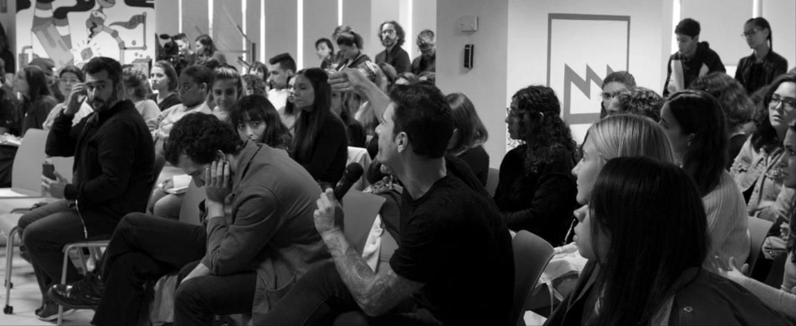

PERGUNTAS E RESPOSTAS O meu voto é mesmo secreto? O voto fica separado do nome do estudante. O comprovativo mostra que o voto foi registado, não em quem votou.
 EXPLICADOR O que faz a Associação de Estudantes Representa os estudantes junto da universidade e organiza atividades ao longo do ano. O mandato dura dois anos.